Added 'powerbi' in C:\Users\you\AppData\Roaming\Claude\
claude_desktop_config.json
[4/4] Checking everything...
[OK] Python 3.12
[OK] mcp library installed
[OK] pythonnet loaded
[OK] Power BI client library found
[OK] Measure editing available
[OK] Claude Desktop is set up
Demo test (Windows).bat
Runs the tools on a small built-in sample model, no Power BI needed.
Step 5 of 7
Restart Claude Desktop
Tray icon near the clock → right-click → Quit
Open Claude Desktop again
Settings → Developer: powerbi is running
Claude
—☐✕
How can I help you today?
Reply to Claude…
Closing the window isn't enough
Settings
—☐✕
General
Account
Privacy
Connectors
Developer
Developer
Local MCP servers
powerbi
running
Show Claude
Quit
⌃
ENG
10:24 AM 07-10-2026
Step 6 of 7
Open your report and test
Open your .pbix, wait for the data to load
New chat: List the tables in my Power BI model
Click Always allow
See your tables = connected!
Several reports open? Ask which are open
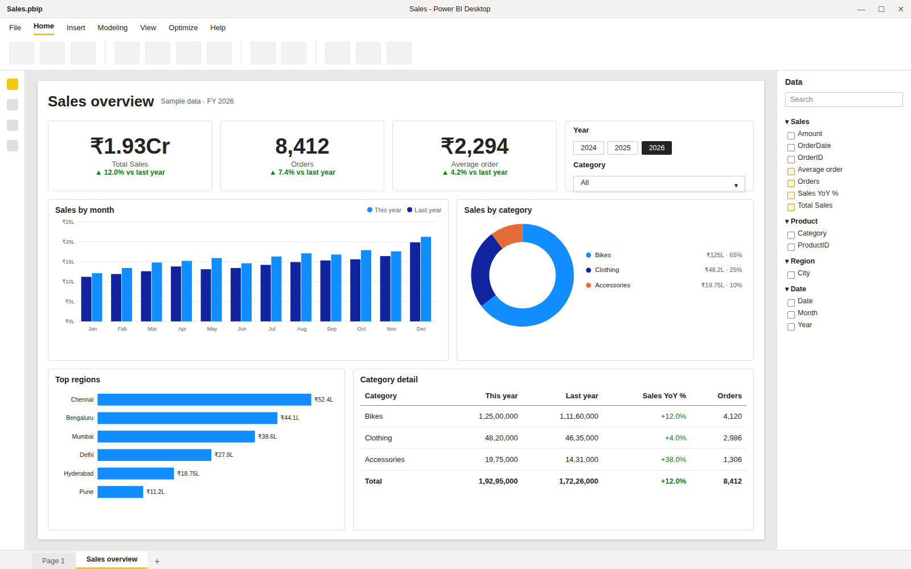
Sales.pbix · Loading data…
Claude · New chat
List the tables in my Power BI model
Claude wants to use list_tables from powerbi
Always allow
Allow once
Deny
▸ list_tables
Your model has 4 tables:
Sales3 columns · 4 measures
Product2 columns
Region1 column
Date3 columns
Reply to Claude…List the tables in my Power BI model
Several reports open?
"Which Power BI reports are open?" "Connect to the one on port 51234."
You're connected
What you can ask
Understand a model
"Explain this data model: tables, relationships and what each measure does."
Answers from your data
"What were the top 5 products by sales last quarter?"
Write a measure
"Create a Sales YoY % measure in the Sales table, formatted as a percentage."
Fix a measure
"My [Margin %] shows wrong totals. Find out why and fix it."
Clean up
"Which measures are not used on any report page?"
Learn DAX
"Explain step by step how [Running Total] works, using numbers from my data."
Peace of mind
Editing measures safely
✓
Claude tests every new measure with DAX firstIf it has an error, nothing is changed.
↺
Changes appear in Power BI Desktop straight awaySave the report to keep them, or close without saving to undo.
?
Claude asks before deleting a measureKeep a copy of important .pbix files before big changes.
R
"Don't change anything, only read."Say this at the start of a chat for read-only mode.
Step 7 of 7
Let Claude build a dashboard
File → Save as → Power BI project (*.pbip), once
Ask Claude, with the full .pbip path
Press Ctrl+S when Claude asks
Close Power BI → Don't save
Open the .pbip again
Save As
✕
This PC › D: › Reports
File name:
Sales
Save as type:
Power BI project files (*.pbip) ▾
Save
Cancel
Sales.pbip
work from this file
Sales.Report
File folder
Sales.SemanticModel
File folder
Claude · New chat
Build a sales overview dashboard on a new page in D:\Reports\Sales.pbip: totals at the top, sales by month against last year, by category, top regions and a detail table.
I added 2 measures. Press Ctrl+S in Power BI Desktop so they're saved, then tell me.
▸ build_dashboard_page "Sales overview"
Done! The Sales overview page is written. Close Power BI Desktop, choose Don't save, and open Sales.pbip again.
Ctrl
+
S
Power BI Desktop
Do you want to save your changes?
Save
Don't save
Cancel
Saving now would overwrite the new page
New "Sales overview" page tab
Make it look designed
Designer themes
…build a sales overview dashboard in D:\Reports\Sales.pbip. Use the midnight theme.
Corporate
Midnight
Ocean
Sunset
Emerald
Royal
Rose
Graphite
Undo: View → Themes → Default
In the PDF guide
10 sample dashboards to copy
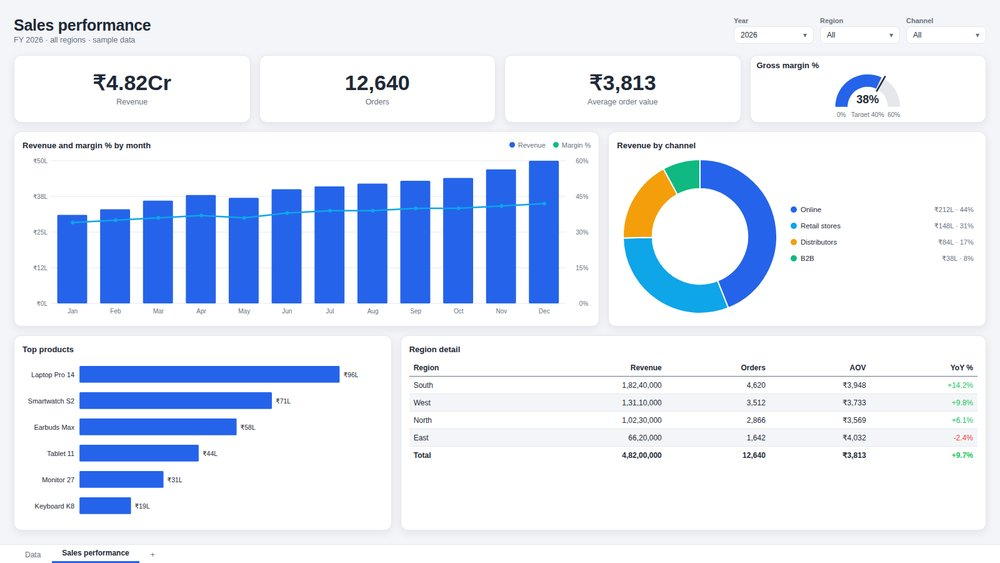
Sales performance
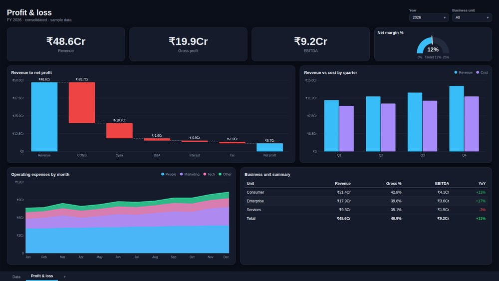
Profit & loss
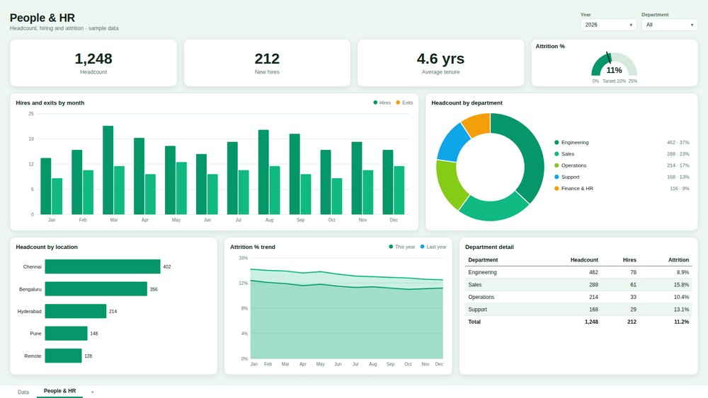
People & HR
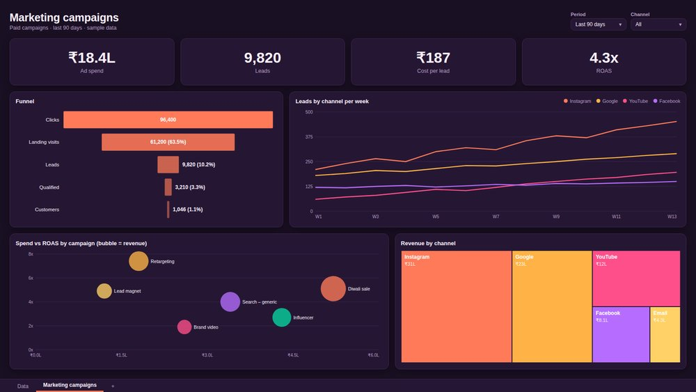
Marketing campaigns
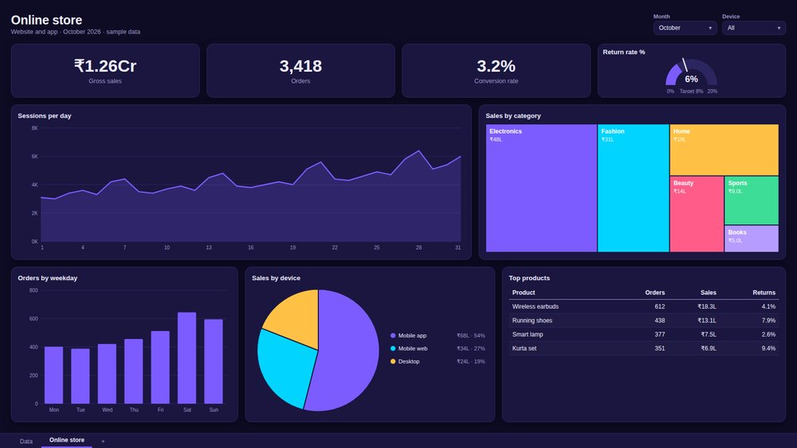
Online store
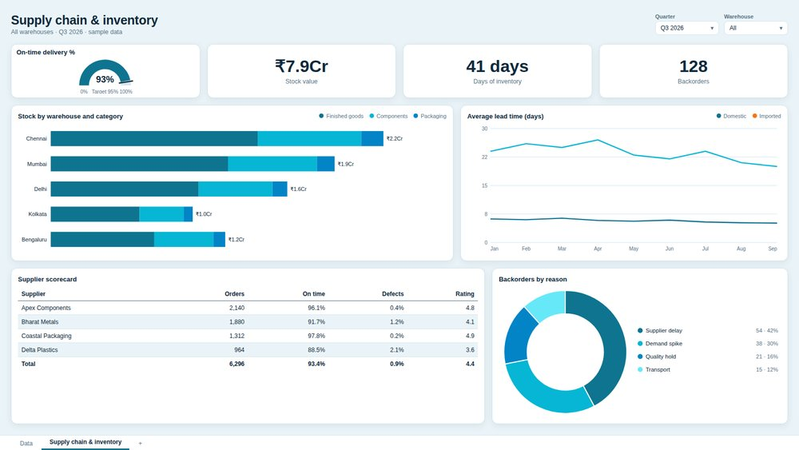
Supply chain
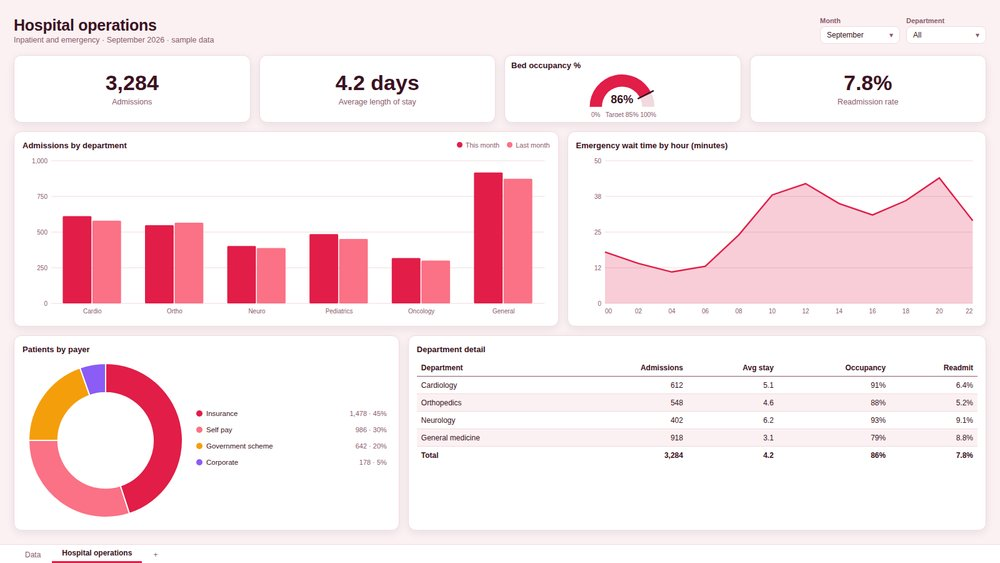
Hospital operations
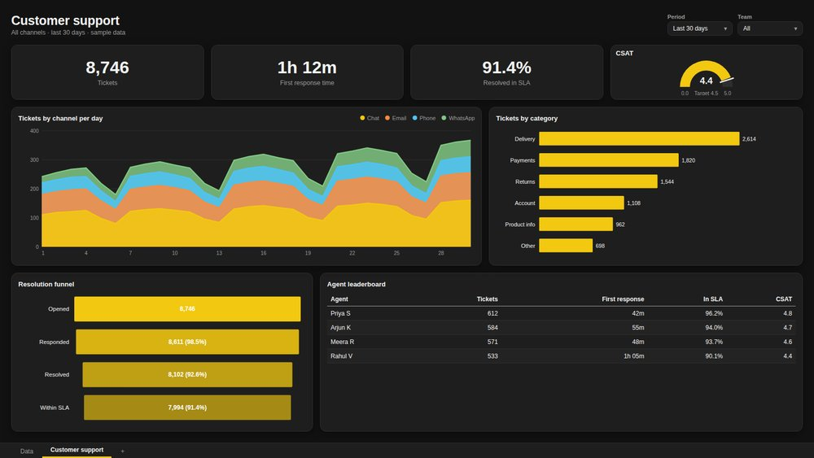
Customer support
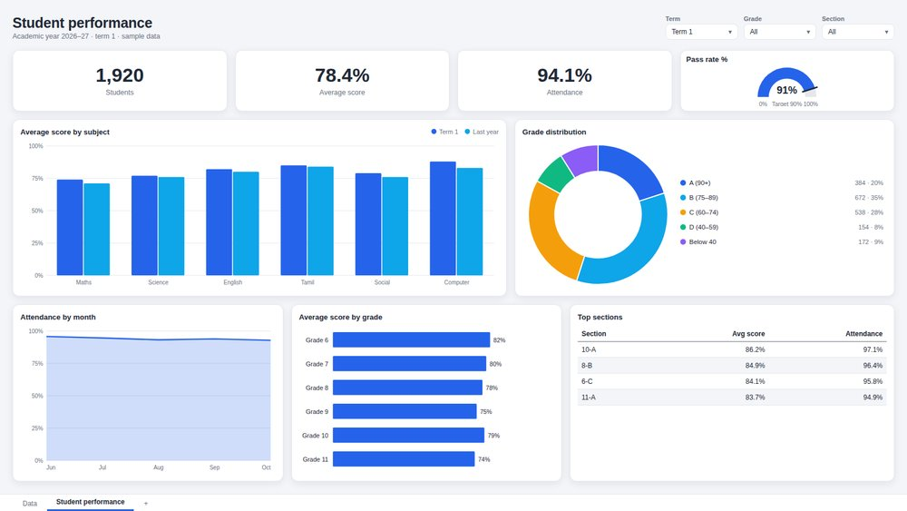
Student performance
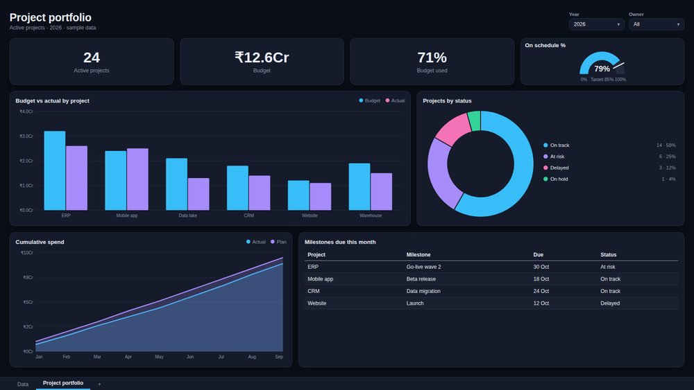
Project portfolio
Copy · edit · send
Build a sales performance page: revenue, orders, AOV, a margin % gauge against 40%, revenue with margin % by month, revenue by channel, top products and a region table in D:\Reports\Sales.pbip
Change field names to yours
Add your .pbip path
Send to Claude
If something goes wrong
Troubleshooting
First, double-click Check (Windows).bat — it tells you what to fix
"Python 3.12 is not installed"
Install Python 3.12 (step 2), then run Setup again.
"pythonnet failed to load"
You're on 3.13+. Install 3.12, delete the venv folder, run Setup again.
Claude has no Power BI tools
Not fully restarted. Quit from the tray icon and reopen.
"No open Power BI report found"
Open a .pbix and wait for the data to load.
New dashboard page isn't there
Close Power BI, choose Don't save, open the .pbip again.
Good to know
Claude Code, moving and updating
>_
Claude Code
Setup adds the server there too. Run claude and ask the same questions.
Moved the folder or got a new version?
Run Setup (Windows).bat again from the new place.
Need help?
You're all set
Still stuck? Email a screenshot of the Check window + your payment ID to
groworafoundation@gmail.com
1 · Install Python 3.12
2 · Unzip
3 · Run Setup
4 · Restart Claude
5 · Open your report
6 · Ask Claude
Happy building!
Welcome!
In this video you'll set up Power BI MCP for Claude,
from downloading the kit to building your first dashboard.
Once it's set up, Claude can read your Power BI model,
answer questions with DAX, write measures and
build whole dashboard pages for you.
It takes about 10 minutes, and you only do it once.
Let's start.
First, here's what you need.
A Windows 10 or 11 computer,
because Power BI Desktop only runs on Windows.
Power BI Desktop.
The normal download from Microsoft works best.
Python 3.12.
We'll install it together in a minute.
And Claude Desktop, installed and signed in.
Get it from claude.ai/download.
Step 1.
Open your browser and go to powerbi.growora.live/purchase.html
This is the buyers' page.
It asks for two things:
the email you paid with, and your payment ID.
Where's the payment ID?
Open the inbox of the email you used to pay.
Easiest:
open our email "Your Power BI MCP for Claude download" and
click Open my download page.
Everything is filled in for you.
Or open Razorpay's receipt email and copy the Payment ID.
It always starts with pay_
Can't see either email?
Check Spam and Promotions, or search your inbox for Razorpay.
Type your email, paste the payment ID, and click Verify and
open downloads.
The page checks your purchase with Razorpay.
In a few seconds you'll see: You're in.
Thank you!
Now download both files:
the Power BI MCP kit (powerbi-mcp.zip) and the PDF guide.
These links work for 24 hours.
Come back to this page any time for fresh links.
Step 2. Install Python 3.12.
Go to python.org, open the Python 3.12 release and
download the Windows installer (64-bit).
Run it.
On the first screen, tick Add python.exe to PATH.
This is important! Then click Install Now.
Already have a newer Python, like 3.13?
That's fine. Install 3.12 next to it.
Setup picks 3.12 automatically.
Step 3. Unzip the kit.
In your Downloads folder, right-click powerbi-mcp.zip,
choose Extract All… and click Extract.
Move the powerbi-mcp folder somewhere permanent, like Documents.
Claude Desktop runs it from there, so don't delete it later.
Step 4. Run Setup.
Open the folder and double-click Setup (Windows).bat
If Windows shows "Windows protected your PC", click More info,
then Run anyway.
Wait 1 to 2 minutes while Setup finds Python 3.12,
installs the libraries, connects to Claude Desktop and
checks everything.
When every line says OK, you're done.
Setup keeps your other Claude servers and
backs up the settings file first.
Tip:
want to see it work before opening Power BI?
Double-click Demo test (Windows).bat
Step 5. Restart Claude Desktop, fully.
Closing the window isn't enough.
Right-click the Claude icon in the system tray, near the clock,
and choose Quit.
Then open Claude Desktop again.
Go to Settings → Developer.
You should see powerbi, running.
Step 6. Open your report and test it.
Open your .pbix file in Power BI Desktop,
and wait until the data has finished loading.
In Claude Desktop, start a new chat and ask:
List the tables in my Power BI model
The first time, Claude asks permission to use the tool.
Click Always allow.
And there it is!
Claude lists your tables with their column and measure counts.
You're connected.
Several reports open?
Ask "Which Power BI reports are open?" and
tell Claude which one to connect to.
Now you can ask Claude almost anything about your report,
in plain English.
Explain your data model.
Find your top 5 products last quarter.
Create a Sales YoY % measure.
Fix a measure with wrong totals.
Find measures nobody uses.
Or learn how a DAX formula works, step by step,
with your own numbers.
Don't worry about breaking anything.
Claude tests every new measure with DAX before saving it.
If there's an error, nothing is changed.
Changes appear in Power BI Desktop straight away.
Save the report to keep them, or close without saving to undo.
Claude asks before deleting a measure.
And you can always say:
don't change anything, only read.
Now the best part:
let Claude build a whole dashboard page.
First, save your report as a project, once.
In Power BI Desktop:
File → Save as → Power BI project (*.pbip).
Then ask Claude, with the full path to your .pbip file,
like this.
If Claude adds measures, it asks you to press Ctrl+S.
Do it, so they're saved.
When Claude says the page is done, close Power BI Desktop and
choose Don't save.
Saving now would overwrite the new page.
Open the .pbip again, and your new dashboard is right there in
the page tabs.
Want it to look designed?
Add a theme to your request, like "use the midnight theme".
There are 8 themes:
Corporate, Midnight, Ocean, Sunset, Emerald, Royal, Rose and
Graphite. To undo: View → Themes → Default.
The PDF guide has 10 sample dashboards, each with
the exact prompt that made it.
Sales, profit and loss, HR, marketing, online store, supply chain,
hospital, customer support, students and projects.
Copy a prompt, change the field names to yours, add your .pbip path,
and send it to Claude.
Something not working?
Double-click Check (Windows).bat first.
It tests every part and tells you what to fix.
"Python 3.12 is not installed"?
Install it, then run Setup again.
"pythonnet failed to load"?
You're on Python 3.13 or newer.
Install 3.12, delete the venv folder and run Setup again.
Claude has no Power BI tools?
It wasn't fully restarted.
Quit from the tray icon and open it again.
"No open Power BI report found"?
Open a .pbix and wait for the data to load.
New dashboard page missing?
Close Power BI, choose Don't save, and open the .pbip again.
A few extras.
If you use Claude Code, Setup adds the server there too.
Moved the folder, or got a new version?
Just run Setup again.
Still stuck?
Email a screenshot of the Check window and
your payment ID to groworafoundation@gmail.com.
We'll help you get it running.
That's it!
Install Python, unzip, run Setup, restart Claude, open your report,